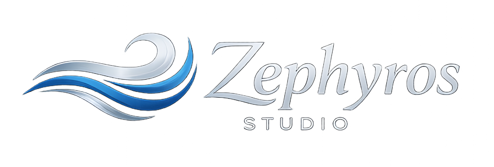

Pensati per essere utili
Ogni prodotto nasce da un’esigenza reale e punta a offrire un valore concreto.

Making everyday life easier.
Scopri i nostri prodottiZephyros Studio
Creiamo prodotti digitali che rispondono a esigenze concrete, semplificano le attività quotidiane e offrono un’esperienza d’uso chiara e intuitiva.
Ogni prodotto nasce da un’esigenza reale e punta a offrire un valore concreto.
La tecnologia dovrebbe ridurre la complessità, non aggiungerne altra.
Design attento, sviluppo affidabile e cura di ogni dettaglio.
I nostri prodotti
Applicazioni progettate per semplificare attività specifiche attraverso interfacce chiare, funzionalità pratiche e una tecnologia pensata con cura.
Musica dal vivo
Your setlist, ready on stage.
Un player audio Windows progettato per i musicisti che desiderano gestire le proprie setlist sul palco in modo semplice, affidabile e immediato.
Scopri OneTwoLiveArchivio creativo
Your visual library of restyling projects.
Un’applicazione visuale per raccogliere, organizzare e conservare idee, tecniche, materiali e ispirazioni dedicate al restyling di mobili e complementi d’arredo.
Scopri Restyle ArchiveContatti
Per informazioni, collaborazioni o richieste sui nostri prodotti, contatta Zephyros Studio.
info@zephyros-studio.com